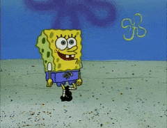

Primary School
1997 - 2004
I was graduaded from Inonu Primary School in Antalya.
High School
2005 - 2008
I was graduaded from Metin Nuran Çakallıklı Anatolian High School in Antalya. I headed towards computer engineering in my high school years and had to study a lot to achieve my goal.
University
2009 - 2013
Results of the university entrance exam showed that, I was within the 20.000th tier in placement and was able to study Computer Engineering at the Dokuz Eylül University in Izmir. I was graduated from the collage with the GPA 2.57